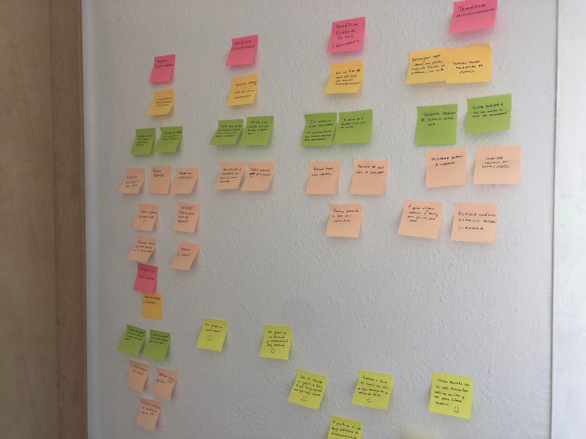
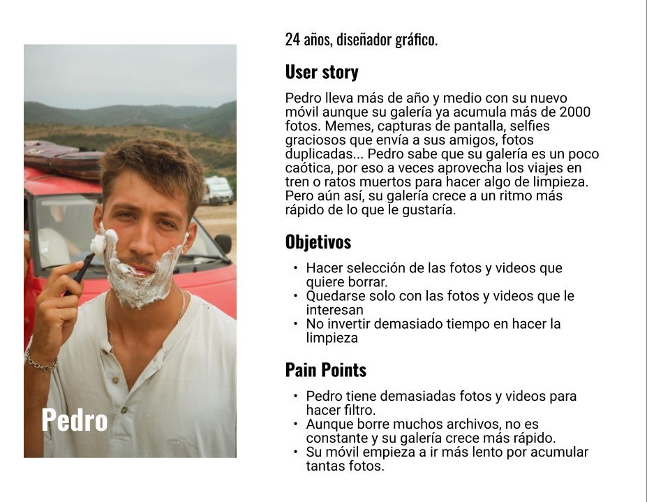
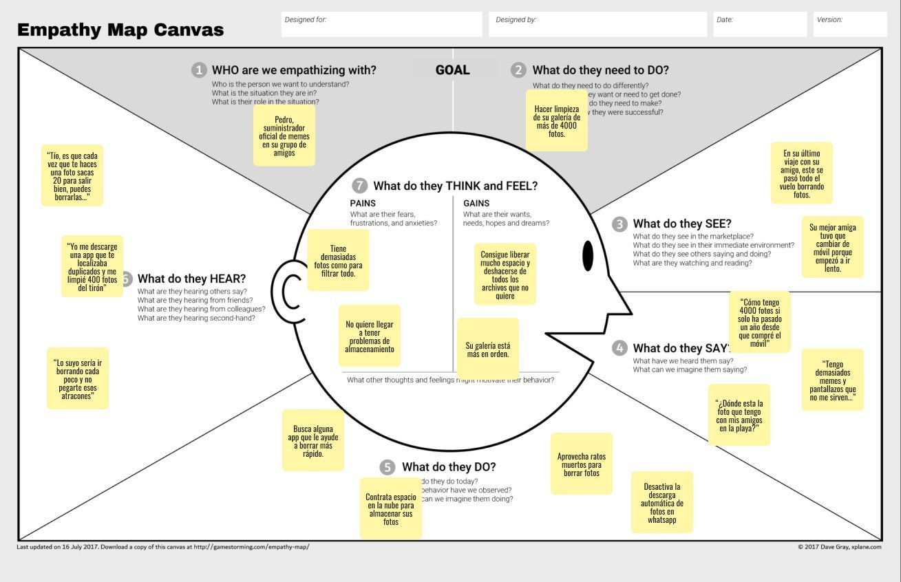
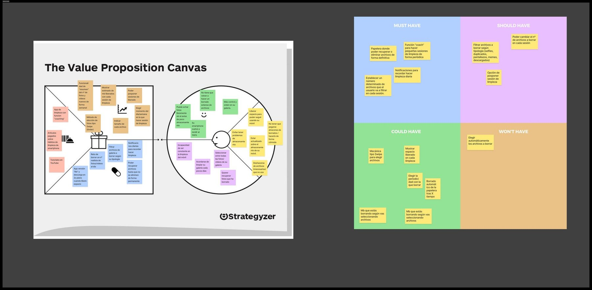
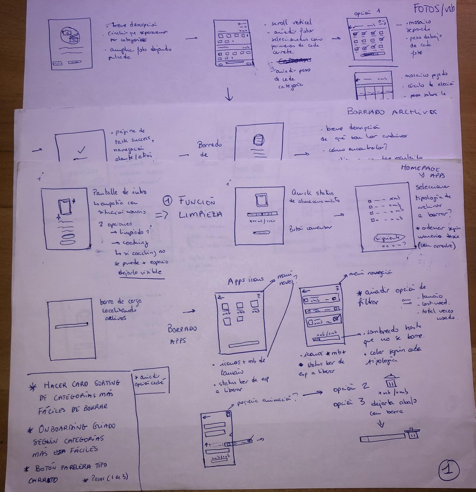
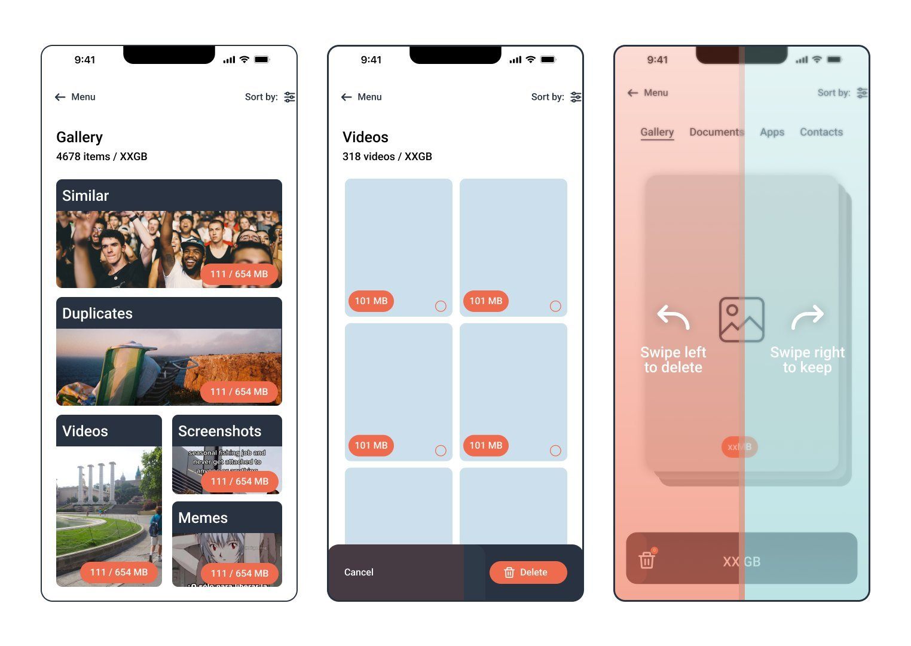
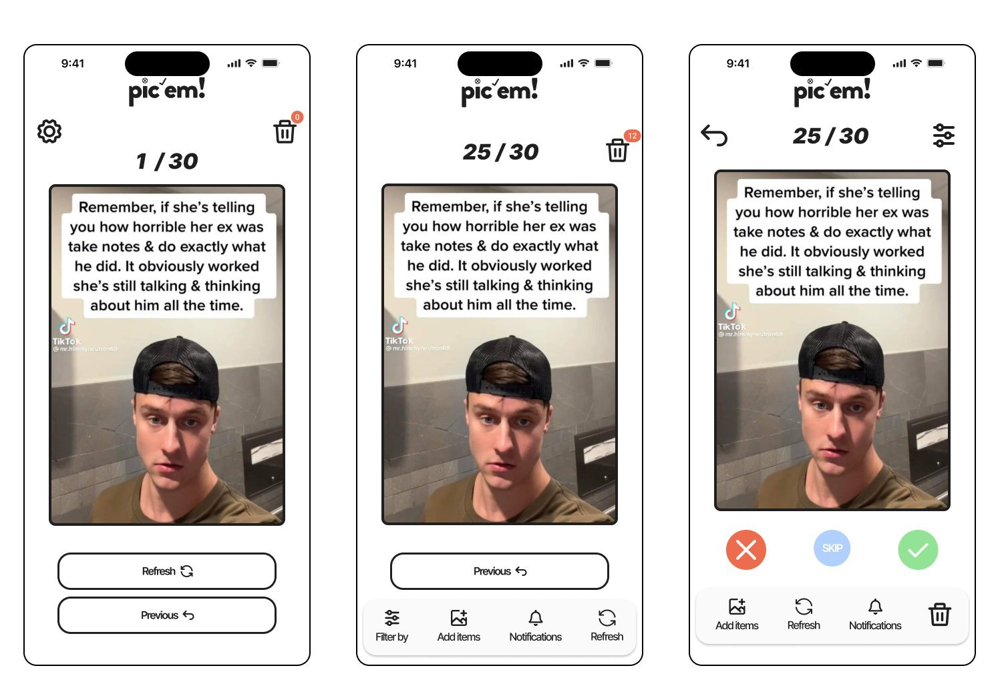
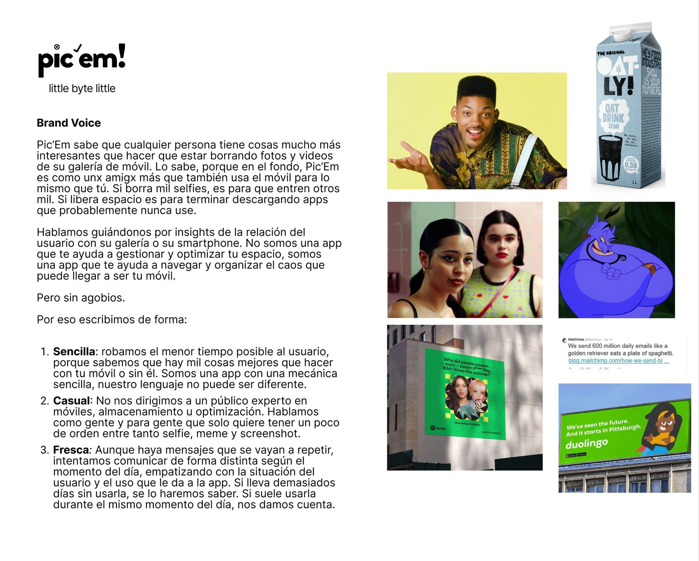
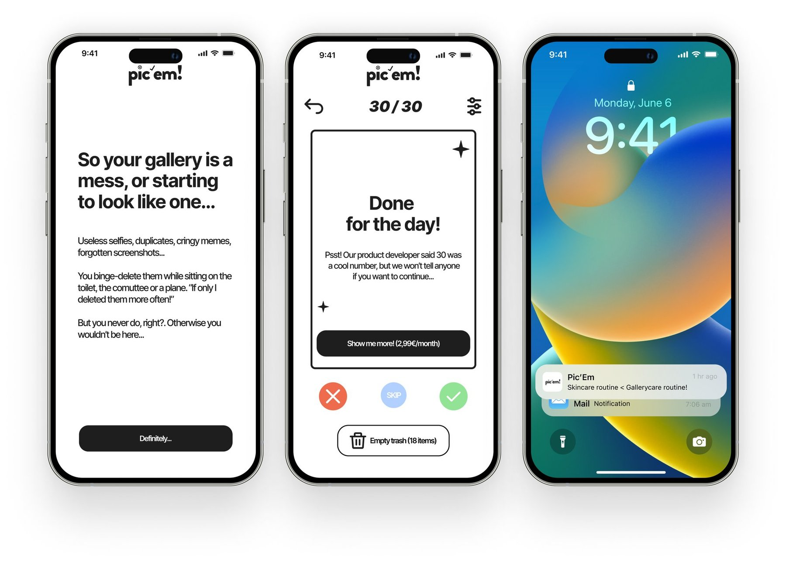

The challenge: many users share the same problem with their smartphone gallery — waaaay too many items to delete, and zero desire to do it.
Tinder-style cleaning for your gallery: 30 photos a day, and you decide which lives and which dies.
As a smartphone user, I realized my gallery — like many around me — was filling up with selfies, duplicates, screenshots and memes that only steal storage. And even after deleting bunches of files now and then, my gallery kept growing faster. So I did what a product designer would: research whether the problem was just mine.
Research
Surveys and interviews with friends, family and colleagues surfaced three takeaways that defined the product. First: we don't clean just for space. Every respondent admitted to wanting a cleaner, more organized gallery even without storage problems — the sheer volume makes the task feel harder, so it gets put off.
Second: we do it occasionally, not as a routine — in spare moments, travelling or out of signal, deleting between 100 and 300 files per session. And third, the most important: nobody wants an app deciding what gets deleted for them. User control was non-negotiable.
wanted a cleaner, more organized gallery, even without storage problems.
clean their smartphone only occasionally, in spare moments.
had ever used a competitor's cleaning app.

The research wall: survey and interview findings grouped by theme — storage, time, choosing and recovering photos, categories.

Pedro, 24, graphic designer and official meme supplier in his friend group: the user persona.

The empathy map: what Pedro thinks, feels, sees and says about his 4,000-photo gallery.
The insight
Every app on the market focuses on bulk deletion and reporting storage status — they work as a one-off remedy for lack of space, not as a solution to the underlying problem. The opportunity was clear: help users build and keep a low-effort cleaning routine, nudged by daily notifications. Less "free up 4GB now", more "a little bit every day".
The design
After two weeks wireframing on paper and Figma, I imitated the mechanic of dating apps — familiar to the target audience (20-35) and able to turn a tedious task into something almost fun. Instead of bulk deletion, 30 items a day: an intermediate number that adds up to 210 a week, close to what interviewees deleted per session.
After several iterations and reviews with UX people, I simplified the actions to four: delete, keep, skip and rewind. Pic'em deletes nothing automatically — the trash only empties when the user decides, because the research made it clear: control is theirs. And a dropdown lets you filter by file category, one of the most requested features in the surveys.

Value Proposition Canvas and MoSCoW to scope the product: recoverable trash, sessions of 30, daily notifications as must-haves.

Two weeks of paper wireframes: cleaning flows, file deletion and homepage.

First Figma screens: file categories, video selection and the swipe-mechanic tutorial.

The final interface: swipe, daily counter of 30, trash and the 4 actions.
UX Writing
Before designing a single screen, I gave the brand a personality. Inspired by routines like skincare, I decided Pic'em would be more like the friend who reminds you — with love and a bit of sass — that your gallery is a mess, than a cold service obsessed with numbers. That voice lives in every interaction: the name and its tagline (little byte little), the onboarding, the notifications — "Skincare routine < Gallerycare routine!" —, the success messages and the empty states.
My favourite: the confirmation modal when emptying the trash, which warns there's no going back by quoting Katy Perry — "Like 'Dark Horse' wisely said: 'There's no going back'". Because even an irreversible-delete warning can be funny without losing clarity.
The brand personality, in one line.

The brand voice — simple, casual and fresh — and its references: from Oatly to Duolingo by way of the Fresh Prince.

The copy in action: onboarding, the "Done for the day!" with upsell, and the lock-screen notification.
The product
In 2026 I revisited the project with a tool that didn't exist when I designed it: Claude. I rebuilt the original Figma prototype as a functional AI-generated prototype, where you can add your own photos for a realistic feel of the app. Two versions of the same product, a few years apart and a complete shift in how prototypes get built.
Epilogue: some time after finishing this project, someone launched an app with an almost identical mechanic. I take it as the best market validation possible — and as a reminder that good ideas are worth registering, too.
Project presentation video.
Got a similar challenge?
Let's talk →